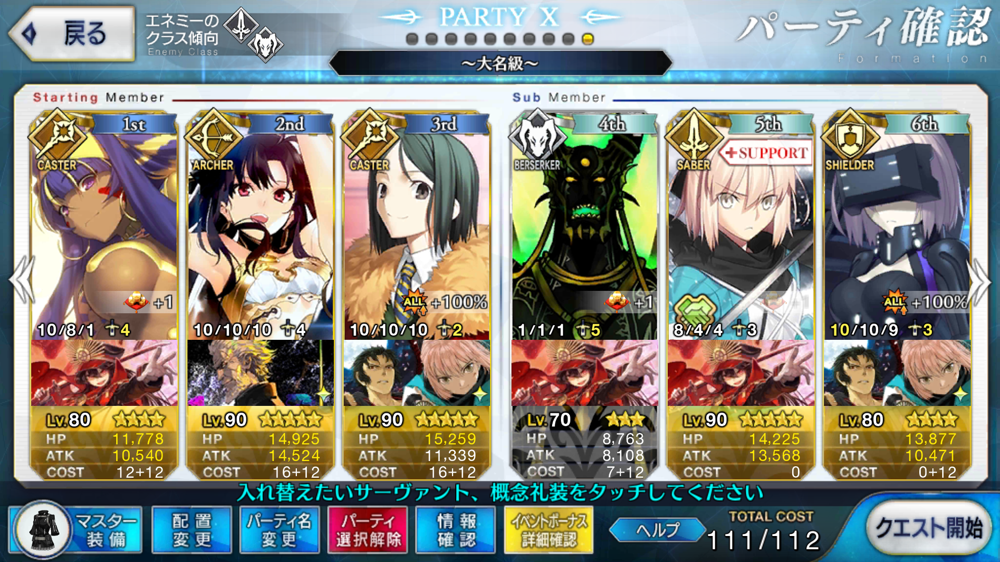

【FGO】復刻：ぐだぐだ明治維新 ライト版 ぐだぐだ掃討戦 大名級
この記事ではFGOイベントの周回を扱います。
編成画像にて最終再臨絵のネタバレがあるのでご注意を
基本方針
- 3T周回する
- 可能な限りドロップ追加礼装を搭載する
ドロップアイテム
- 混沌の爪
- 八連双晶
- 狂の秘石
- 狂の輝石
- 小判
エネミー構成
- メカノッブ系（狂）
- ポチ（キメラ）
- 上杉アルトリア
編成例

オダチェンステラなし3ターンかつドロップ礼装3枠
ニトクリス→イシュタル→イシュタルの順で宝具をブッパする
3wは画像の編成だと上杉アルトリアが乱数1
ただし、キャスターの追撃でも問題ないレベルではある
マスター礼装をアニバーサリー・ブロンドに変更すると追撃不要にできそう
周回用キャラ選別
NPチャージ持ち全体宝具
上杉アルトリア以外はバーサーカーなので、適当にNPをチャージして全体宝具を撃てるサーヴァントを採用できる
中でも自前で100以上NPを獲得できる全体宝具持ちのニトクリスは最優候補
NPチャージ持ち全体宝具アーチャー
上杉アルトリアを巻き込みながら3wを吹き飛ばす要員
NP50チャージのイシュタルが最も適している
宝具レベルが低く火力不足であればギルガメッシュのほうが安定はするか
特効持ち全体宝具アーチャー
信長とエミヤ
NPに関しては孔明等のサポートが必須になるが、星5火力サーヴァントを用いずに3wを突破できる
騎乗持ちのアルトリアに対して特攻付きの宝具を持ち、ぐだぐだ本能寺イベントの配布サーヴァントでもある信長が頭ひとつ抜けているか
戦略で味方のNPリチャージをサポートできるところも優秀